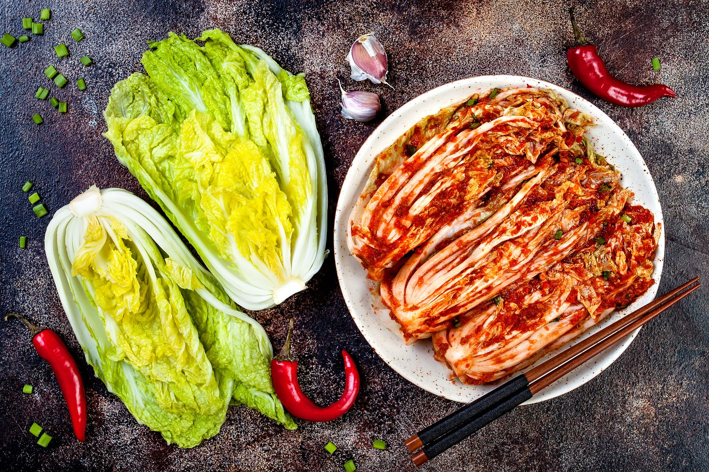

Home
Kimchi

Description
This is a delicious meal from korea that is being served as a side dish to nearly every main dish. It consists of fermented cabbage usually napa cabbage, radish or cucumber with a few tasty ingredients to give it some flavor. Originally korean kimchi is very spicy. To spare tongue and stomach the spices are very much optional. Allthough a little bit of spice adds to the taste. So I recommend at least one hot pepper. Furthermore the original recipe includes rice flour. I do not use that in my recipe. I tried it once and do not miss it since.
Ingredients
- 2 napa cabbages
- About 40 g Salt
- Soy sauce
- 2 cloves of garlic
- 1 pear / or 2 instead of an apple
- 1 apple
- 1 blub ginger approx. 10 g
- Fish sauce / you can use vegan fish sauce as well
- Chili pepper or chili flakes
- 2 carrots
- radish
- 1 batch of spring onion
Tools
- Blender
- 2 jars for storage
Steps
- Cut the cabbage in quarters
- Rinse, wash the cabbage and shake the water off
- Cut the cabbage into two to three cm thick stipes (about one inch)
- Put the cabbage into a bowl and season it heavily with salt. Try to get the salt as spreaded as you can. Mix it up if needed
- Set the cabbage beside for about half an hour. Check if the water is comming out of the cabbage and it becomes lose. If not give in a little more salt
- Meanwhile prepare the paste: Peal the ginger and garlic
- Roughly chop ginger, garlic and hot pepper and add it to the blender
- Wash pear and apple (pealing is optional), roughly chop them and add them to the blender
- Add a 6 tablespoons of soy and 2 tablespoons of fish sauce and start blending
- Blend until it's smooth
- Peal the radish and carrots
- Slice them into chunks and then try to slice them up like in the picture below. It does not have to be this thin. It can be more rough if you want more texture afterwards. That's totally fine

- Mix the cut vegetables and paste in a larger bowl. The bowl should be big enough to fit in the cabbage aswell
- When the cabbage's water is out, rinse it, wash it, otherwise the kimchi will be too salty and get rid of most of the water by pressing it out
- Add the cabbage to the large bowl and mix it with the pasted veggies
- Give it a good mix and then fill the kimchi into prepared jars. Do not fill it to the top. Give it a couple of centimeters air. The lit should not be closed but just resst on top of the jar
- Let it sit like this for two to three days depending of whether you want it more or less fermented
- After the time has passed you successfully made kimchi the easy way!
- Now you can close the lid and store it in the fridge so it lasts longer
Have a nice meal!